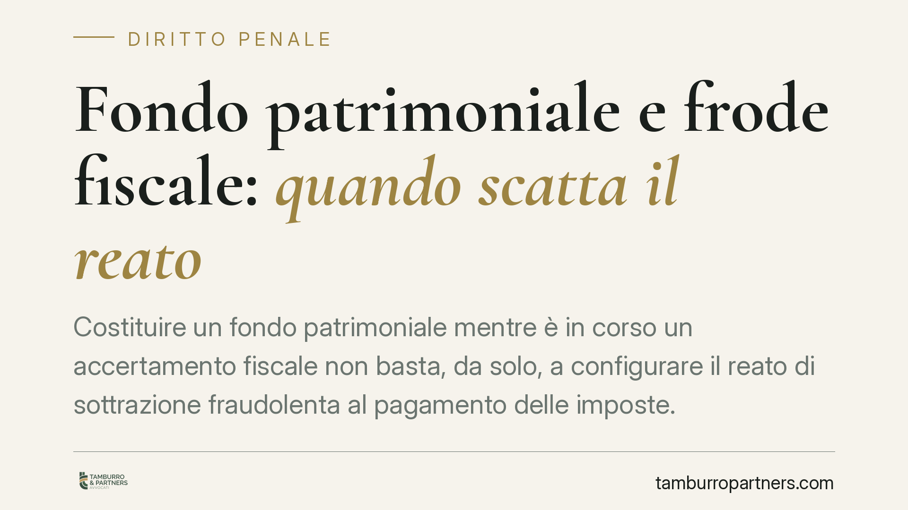

Fondo patrimoniale e frode fiscale: quando scatta il reato
Costituire un fondo patrimoniale mentre è in corso un accertamento fiscale non basta, da solo, a configurare il reato di sottrazione fraudolenta al pagamento delle imposte. Serve la prova che l'atto sia idoneo a ostacolare la riscossione e presenti elementi di artificio. Un principio che separa il piano penale da quello civilistico e impone cautela nella pianificazione patrimoniale.

Il caso e la pronuncia (da verificare)
Secondo quanto riportato in relazione alla pronuncia n. 5760/2026, attribuita alla Sezione III penale della Corte di Cassazione, la costituzione di un fondo patrimoniale in pendenza di un accertamento fiscale non integra in modo automatico il reato di cui all'art. 11 del D.Lgs. 74/2000.
Avvertenza: numero, anno, sezione e principio di diritto richiedono conferma sulle fonti ufficiali prima di qualunque utilizzo. Trattiamo qui il tema in via cautelativa, concentrandoci sul quadro normativo consolidato, che resta valido a prescindere dalla singola sentenza.
L'art. 11 D.Lgs. 74/2000: la sottrazione fraudolenta
L'art. 11 del D.Lgs. 74/2000 punisce chi, al fine di sottrarsi al pagamento di imposte sui redditi o sul valore aggiunto, ovvero di interessi e sanzioni, per un ammontare complessivo superiore a 50.000 euro, aliena simulatamente o compie altri atti fraudolenti sui propri o altrui beni, idonei a rendere in tutto o in parte inefficace la procedura di riscossione coattiva.
Gli elementi costitutivi sono tre e devono coesistere:
- il dolo specifico, cioè la finalità di sottrarsi al pagamento;
- la natura simulata o fraudolenta dell'atto (l'artificio);
- l'idoneità dell'atto a ostacolare, in concreto, la riscossione.
È un reato di pericolo: non serve che la riscossione fallisca davvero, ma occorre che l'operazione sia concretamente capace di comprometterla. La sola diminuzione della garanzia patrimoniale non basta se manca il carattere artificioso.
Il fondo patrimoniale nel codice civile
Il fondo patrimoniale è disciplinato dagli artt. 167 e seguenti del codice civile. È un vincolo che destina determinati beni al soddisfacimento dei bisogni della famiglia. I beni vincolati non possono essere aggrediti dai creditori per debiti che questi sapevano estranei ai bisogni familiari (art. 170 c.c.).
Si tratta di uno strumento lecito di organizzazione patrimoniale. La sua costituzione, in sé, non è un illecito. Il problema nasce quando lo strumento viene piegato a una finalità di sottrazione, con modalità che superano la fisiologia dell'istituto.
Due piani da non confondere: penale e civile
Qui sta il cuore della questione. Il piano penale e quello civilistico operano su presupposti diversi e non vanno sovrapposti.
Sul piano civile, il creditore, compresa l'Agenzia delle Entrate, può reagire con l'azione revocatoria (art. 2901 c.c.), che consente di dichiarare inefficace l'atto pregiudizievole senza bisogno di provare artifici o dolo specifico penalmente rilevante. Basta il pregiudizio alla garanzia e la consapevolezza dello stesso.
Sul piano penale, invece, la soglia è più alta: occorre l'artificio, il dolo specifico e l'idoneità concreta a ostacolare la riscossione, oltre al superamento dei 50.000 euro. Un atto revocabile in sede civile non è, per ciò solo, penalmente rilevante.
La conseguenza pratica è netta: la costituzione di un fondo patrimoniale può esporre a revocatoria pur non integrando alcun reato. Confondere i due piani porta a valutazioni errate del rischio.
Implicazioni pratiche per il contribuente
Per chi valuta operazioni di protezione patrimoniale, il messaggio è duplice. Da un lato, il timing conta: un fondo costituito in prossimità o durante un accertamento attira attenzione e può alimentare l'ipotesi del dolo. Dall'altro, la mera contestualità temporale non è prova sufficiente: l'accusa deve dimostrare l'artificio e l'idoneità dell'atto.
Restano comunque aperti i rischi civilistici e la possibile inefficacia dell'atto verso il Fisco. La protezione ottenuta può rivelarsi apparente.
Cosa fare in concreto
- Verificare il momento dell'operazione: evitare di costituire il fondo quando sono già in corso accessi, verifiche o notifiche da parte dell'Agenzia delle Entrate.
- Documentare la finalità familiare del vincolo, coerente con gli artt. 167 ss. c.c., evitando schemi puramente elusivi.
- Distinguere i rischi: valutare separatamente l'esposizione penale (art. 11) e quella civilistica (revocatoria ex art. 2901 c.c.).
- Conservare tracciabilità delle ragioni economiche e familiari dell'atto, utile a escludere l'intento fraudolento.
- Far precedere l'operazione da una valutazione professionale complessiva, prima della costituzione e non dopo la contestazione.
Conclusione
Il fondo patrimoniale non è, di per sé, una frode fiscale. Diventa penalmente rilevante solo in presenza di artificio, dolo specifico e idoneità a ostacolare la riscossione. Fino a conferma ufficiale della pronuncia citata, il quadro di riferimento resta quello dell'art. 11 D.Lgs. 74/2000 e degli artt. 167 ss. c.c.
---
Contributo informativo a cura di Tamburro & Partners Avvocati. Non costituisce parere legale.
Ogni condominio ha una storia a sé.
Se gestisci un'amministrazione e vuoi un confronto su una specifica questione condominiale, scrivi allo studio. Ti rispondiamo entro un giorno lavorativo.